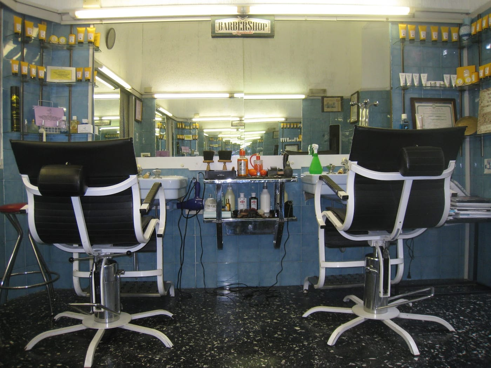
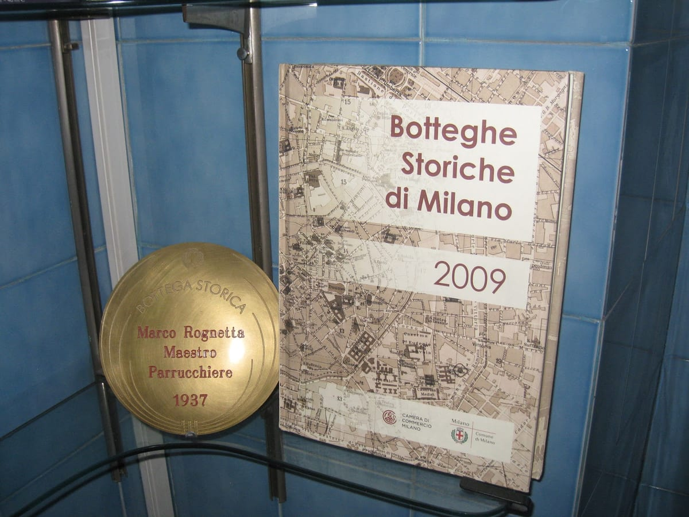
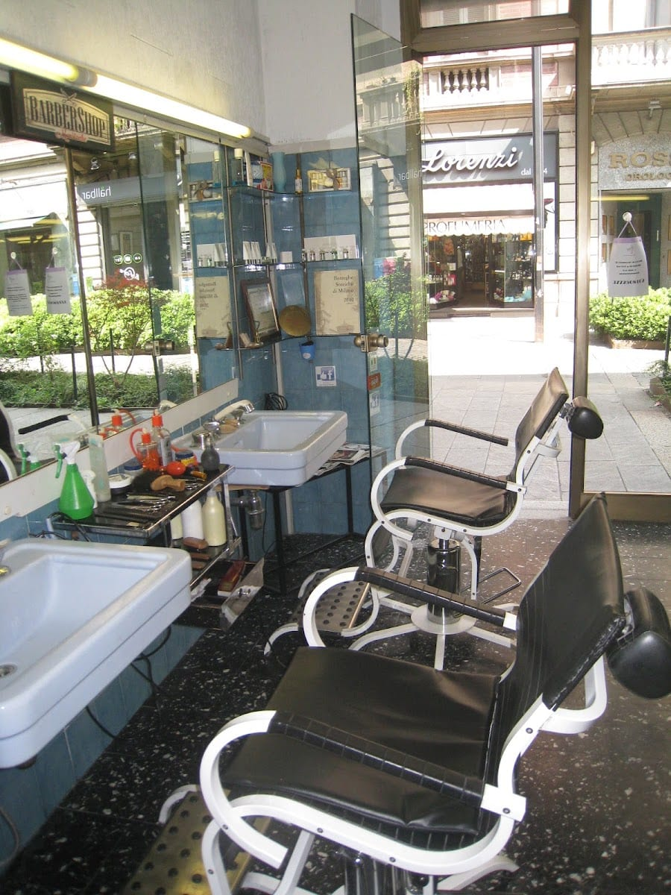
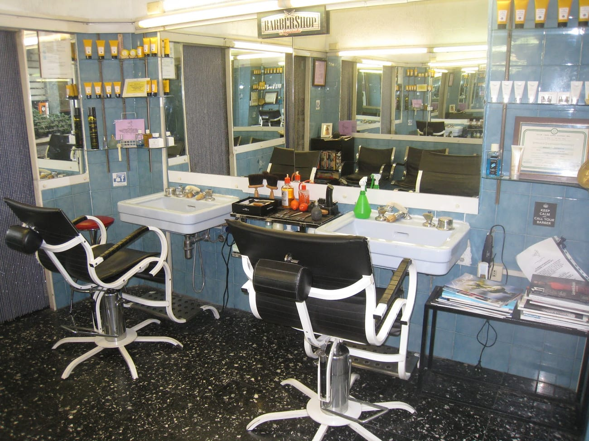
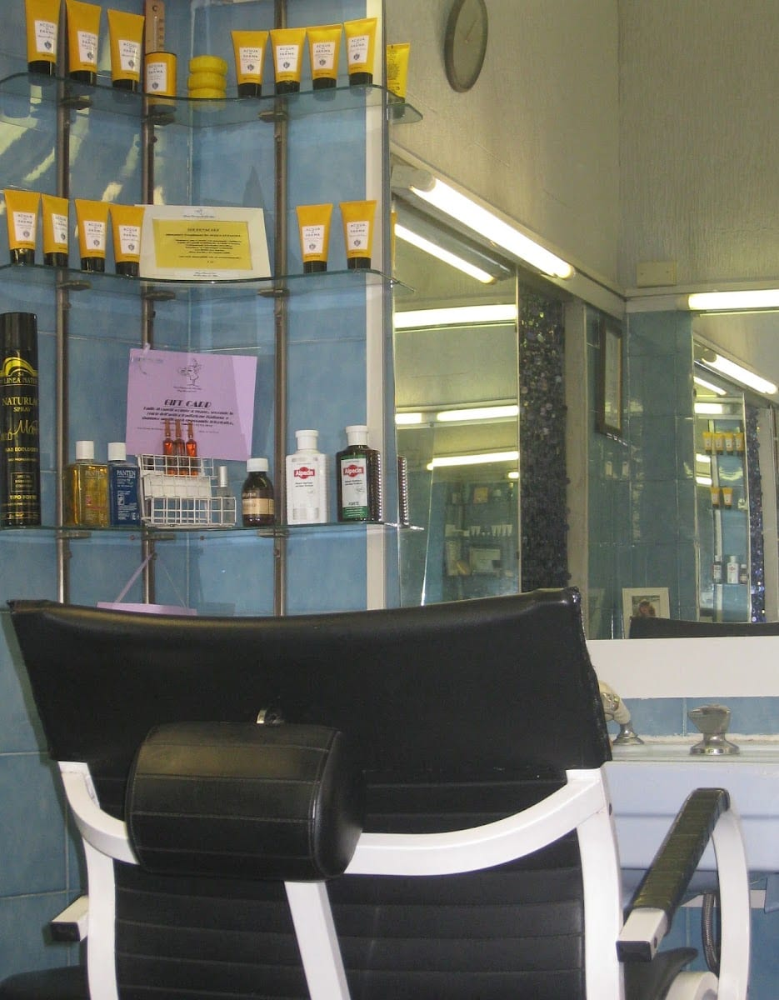
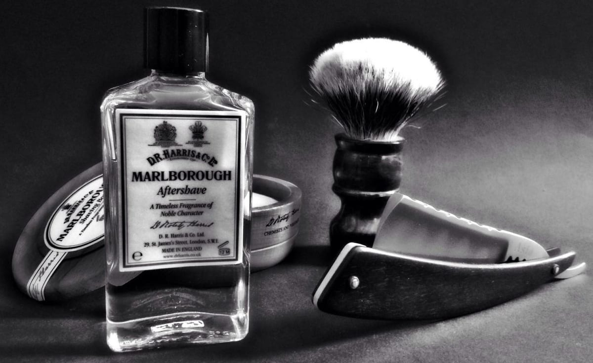
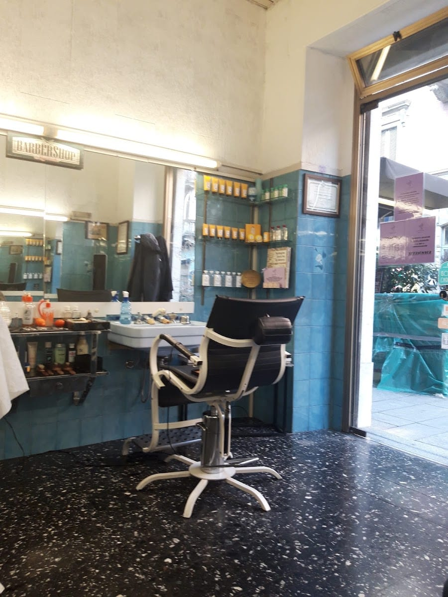
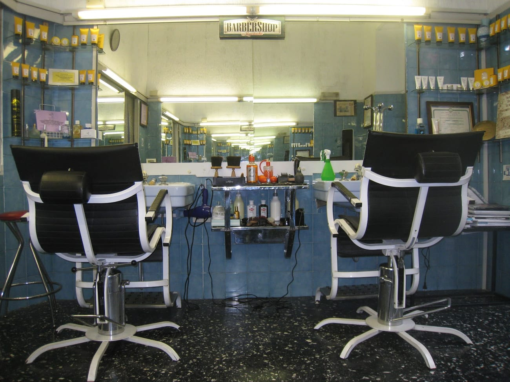

Taglio classico
Il taglio da uomo, su misura del viso e del gusto.
Via Paolo Sarpi 63 · Chinatown, Milano
L'unico barbershop che si affaccia direttamente sulla nostra amata via Sarpi, dal 1937. Bottega storica di Milano: taglio a forbice, barba e rasatura tradizionale. Non avere dubbi — scegli sempre l'originale.

Dal 1937
Da quasi novant'anni lo stesso indirizzo, la stessa via. L'antico Parrucchiere della Paolo Sarpi è l'unico barbershop che si affaccia direttamente su via Sarpi, nel cuore di Chinatown, dal 1937.
Riconosciuta Bottega Storica di Milano, è la bottega di Marco Regnetta, maestro parrucchiere: mani sicure, forbici affilate e il gusto di fare le cose come una volta.


Da Marco
Da Marco si va per il taglio — eseguito rigorosamente a forbice, davvero eccellente — ma anche solo per il piacere di scambiarsi due parole. È una persona di una simpatia unica, e si vede.
Un vero professionista, educato e gentile, che segue il cliente con cura. Andare a tagliarsi i capelli qui, dicono i clienti da anni, è semplicemente un piacere.
«Non avere dubbi: scegli sempre l'originale.»
In bottega
Poche cose, fatte come si deve. Con prodotti come Acqua di Parma e D.R. Harris. Prezzi onesti: chiedi in bottega.
Il taglio da uomo, su misura del viso e del gusto.
La specialità della casa: rigorosamente a forbice, come una volta.
Modellatura e rifinitura della barba, con cura del dettaglio.
Panno caldo, rasoio e prodotti classici: il rito completo.
Il pacchetto completo per rimettersi in ordine da capo a mento.
Anche i più piccoli, con pazienza e il sorriso.
La bottega





Le voci
Cliente da diversi mesi, sempre soddisfatto del taglio, eseguito rigorosamente a forbice: davvero eccellente. Il titolare è di una simpatia unica — vengo anche solo per scambiarci due chiacchiere.
Aurelio Maglione · ★★★★★
Da tanti anni sono cliente dell'Antico Parrucchiere della Paolo Sarpi. Marco è un vero professionista ed è anche molto simpatico. Andare a tagliarsi i capelli da lui è un vero piacere.
Marco · ★★★★★
Posto bello, titolare molto educato e gentile. Passandoci davanti diverse volte mi sono detto «proviamo»: ho fatto benissimo.
Marco Santoro · ★★★★★
Bottega storica e curata, in centro a Milano. Si respira la storia della via.
Recensione Google · ★★★★★
Prodotti eccellenti e prezzi onesti. Un barbershop d'altri tempi, nel senso migliore.
Recensione Google · ★★★★★
Dove siamo
FAQ
In Via Paolo Sarpi 63, nel cuore di Chinatown a Milano: l'unico barbershop che si affaccia direttamente sulla via, dal 1937.
Taglio classico e taglio a forbice, barba e rifinitura, rasatura tradizionale con panno caldo, taglio & barba e taglio bambino. Con prodotti come Acqua di Parma e D.R. Harris.
Si può passare in bottega o telefonare al 377 250 8102 per fissare un appuntamento con Marco.
Da martedì a sabato, dalle 9:00 alle 19:30. Domenica e lunedì chiuso.